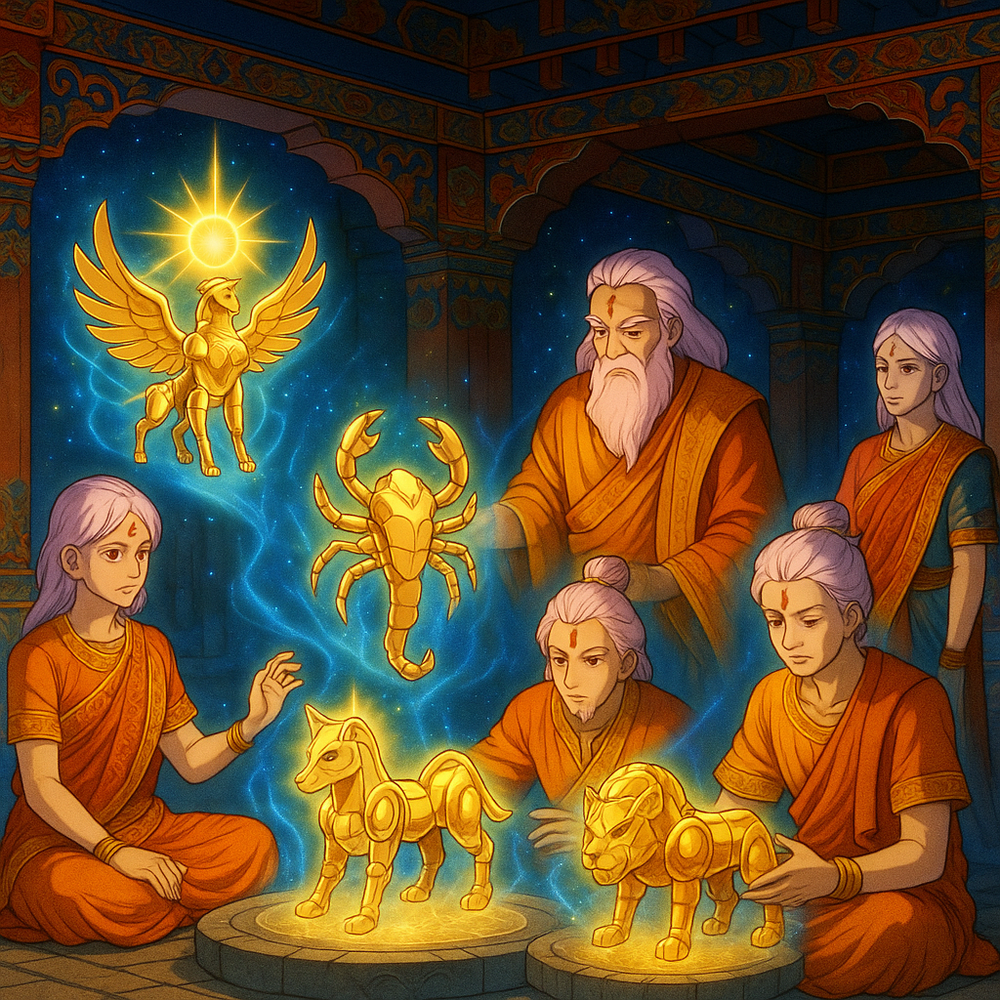

Para entender o que é a armadura de um cavaleiro, é preciso primeiro descrever o que ela não é. Ela não é uma couraça de metal pesado feita para proteger de golpes de armas letais; apesar de que o nome confunde os que não conhecem sua natureza. Cavaleiros com suas meras mãos conseguem se defender de armas de fogo modernas. Portanto, a armadura de um cavaleiro não é feita para defesa. Se fosse feita para defesa seria ridículo. Pois a maioria das armaduras deixa muitas partes do corpo expostas.
A armadura é uma veste sagrada de poder místico que contém a cosmo-energia (ou simplesmente 'cosmo') da constelação guardiã do cavaleiro. Exemplo: A armadura de Órion é imbuída com a cosmo-energia da constelação de Órion. Quem veste esta armadura é o guerreiro que atingiu um nível de cosmo alto o suficiente para que a armadura o escolha como portador desta constelação; o cavaleiro de Órion. Apesar de que sem a armadura um cavaleiro já tem acesso ao cosmo das estrelas de sua constelação guardiã para fortalecer seu próprio cosmo, a armadura fortalece a sintonia entre o seu próprio cosmo e o cosmo de sua constelação. Assim deixando seu cosmo mais poderoso e mais fácil de ser usado num combate. Se uma pessoa comum vestir uma armadura sagrada para ela será nada mais que uma estranha veste pesada de uma liga metálica estranha sem serventia alguma. Pois ela não tem um cosmo desenvolvido para combate e portanto nenhuma constelação o elegeu como cavaleiro. Então um vestir uma armadura não terá efeito nenhum.
Com tudo que já foi dito, vale ressaltar que uma armadura é 'viva'. Pois se ela carrega a cosmo-energia de uma constelação para poder melhor alinha-la com a cosmo-energia do cavaleiro que a veste; então ela é um objeto que tem uma 'vida' em si. Não é vida orgânica, mas é viva mesmo assim. As armaduras dos cavaleiros tem poder de regeneração quando são danificadas em combate; contanto que o dano não seja extremo. Quando um cavaleiro não está vestindo a sua armadura, as peças da armadura instintivamente se unem para formar uma silhoueta que lembra a constelação guardiã que armadura representa. Exemplo: quando o cavaleiro de dragão não veste a armadura, os compontentes automaticamente se agrupam para formar a silhoueta de um dragão. A razão pela qual ela têm um poder místico é devido aos ingredientes dos quais elas são feitas. Os ingredientes são:
Os deuses possuem vestes sagradas próprias. Portanto eles oferecem ao seu exército de guerreiros alguma espécie de veste sagrada para ajudar em conflitos entre exércitos de deuses que lutam entre si. Na primeira guerra santa travada entre Athena e outro deus foi contra Poseidon. Ele foi o primeiro Deus a dar a seus guerreiros vestes sagradas feitas de oricalco; pois o continente de Atlândida o qual era a sede do seu santuário de guerreiros era abundante neste metal. Em resposta, Athena convocou alquimistas do antigo continente Mu para desenvolver vestes sagradas poderosas para combater as forças de Poseidon. E foi assim que as armaduras foram criadas. As armaduras que foram criadas pelos antigos alquimistas na antiguidade são as mesmas que hoje são usadas pelos cavaleiros.
